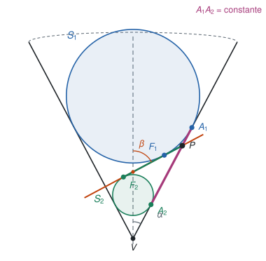
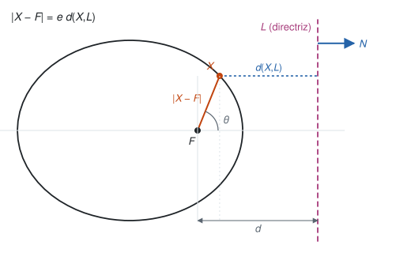
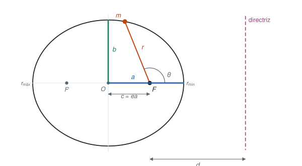
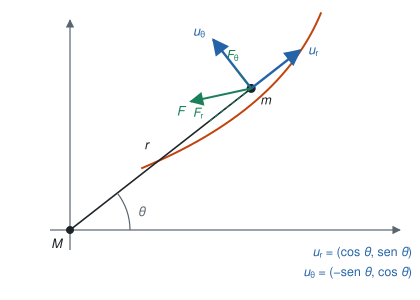
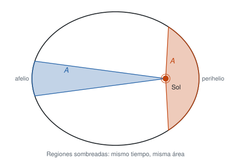

Movimiento Planetario
De las esferas de Dandelin a las tres leyes de Kepler
Esta sección sigue el §21 del Simmons y la sección 13.18 del Apostol (Calculus, vol. 1). El plan tiene dos partes. Primero se construye la geometría: la elipse como sección de un cono, con las esferas de Dandelin, y su ecuación en coordenadas polares. Después se llega a la misma ecuación desde la física, resolviendo una ecuación diferencial: la ley de gravitación de Newton y la conservación del momento angular dan la órbita, y de ella salen las tres leyes de Kepler.
Convenciones: un punto sobre una variable indica derivada respecto al tiempo, \(\dot r=dr/dt\), y una prima indica derivada respecto al ángulo, \(z'=dz/d\theta\). Cuando haga falta se escribe \(dt\) o \(d\theta\) de forma explícita.
1 De esfera a planeta
Las cuentas de esta sección son la última etapa de una historia larga: la Tierra pasó de ser una esfera en el centro del cielo a ser un planeta más, y las cónicas de Apolonio resultaron ser las órbitas que dibujan esos planetas. El siguiente panel recorre siete autores, de Aristarco a Newton, y para cada uno responde tres preguntas: qué aportó sobre la Tierra redonda, sobre su rotación y sobre su condición de planeta.
2 Las cónicas y las esferas de Dandelin
Sea \(A\) una recta fija y \(G\) una recta móvil que la corta en un punto \(V\) y que forma con \(A\) un ángulo constante \(\alpha\in(0,\pi/2)\). La superficie que barre \(G\) al girar alrededor de \(A\) es un cono (doble): \(G\) es la generatriz, \(A\) el eje y \(V\) el vértice. Las curvas que se obtienen al cortar el cono con un plano que no pasa por \(V\) se llaman cónicas:
- si el plano es paralelo a una generatriz, la curva es una parábola;
- si no es paralelo a ninguna y corta una sola hoja del cono, es una elipse, y es un círculo cuando el plano es ortogonal al eje;
- si corta las dos hojas, es una hipérbola.
La idea que sigue es de Dandelin (1822). Tomemos dos esferas \(S_1\) y \(S_2\) tangentes al cono y al plano de corte, una a cada lado del plano, y llamemos \(F_1\) y \(F_2\) a los puntos donde cada esfera toca el plano. Sea \(P\) un punto de la elipse. La generatriz que pasa por \(P\) y por el vértice corta a las circunferencias de tangencia de \(S_1\) y \(S_2\) con el cono en dos puntos \(A_1\) y \(A_2\).

Los segmentos \(PF_1\) y \(PA_1\) son dos tangentes a la esfera \(S_1\) desde un mismo punto exterior \(P\), así que \(|PF_1|=|PA_1|\). Lo mismo ocurre con \(S_2\): \(|PF_2|=|PA_2|\). Entonces
\[|PF_1|+|PF_2| = |PA_1|+|PA_2| = |A_1A_2|\]
y \(|A_1A_2|\) no depende de \(P\): es la distancia, medida sobre una generatriz, entre las dos circunferencias de tangencia, y por la simetría de revolución es la misma para todas las generatrices. La suma de las distancias a \(F_1\) y \(F_2\) es constante, que es precisamente la definición escolar de la elipse, con focos \(F_1\) y \(F_2\).
Mueva el deslizador de la excentricidad \(e\) y vea cómo el plano rueda sobre la esfera inscrita en el cono. Con \(e=0\) el plano es ortogonal al eje (círculo), con \(0<e<1\) se tiene una elipse, con \(e=1\) el plano es paralelo a una generatriz (parábola) y con \(e>1\) corta las dos hojas (hipérbola). El panel muestra \(PF_1+PF_2\) en la elipse y \(|PF_1-PF_2|\) en la hipérbola, y también la directriz, que se define en la siguiente sección. Arrastre la imagen para girarla.
3 La directriz y la forma polar
Hay otra definición de las cónicas, que sirve también para la parábola y la hipérbola. Sea \(L\) una recta, \(F\) un punto fuera de \(L\) y \(e>0\) un número. El conjunto de todos los puntos \(X\) que cumplen
\[|X-F| = e\,d(X,L)\]
es una cónica de excentricidad \(e\): una elipse si \(e<1\), una parábola si \(e=1\) y una hipérbola si \(e>1\). El punto \(F\) es un foco y \(L\) la directriz.
3.1 La directriz en el cono
En la representación de Dandelin, \(L\) es la intersección del plano de corte \(\Pi\) con el plano \(\Pi_1\) de la circunferencia de tangencia de \(S_1\) con el cono, y \(F=F_1\). Veamos que se cumple la relación y de paso quién es \(e\). Sea \(\beta\) el ángulo entre el plano \(\Pi\) y el eje del cono. Para un punto \(P\) de la curva:
- \(P\) y \(A_1\) están en la misma generatriz, que forma el ángulo \(\alpha\) con el eje, y \(\Pi_1\) es ortogonal al eje y contiene a \(A_1\). Entonces la distancia de \(P\) al plano \(\Pi_1\) vale \(|PA_1|\cos\alpha\).
- Como \(P\) está en \(\Pi\), esa misma distancia es \(d(P,L)\) por el seno del ángulo diedro entre \(\Pi\) y \(\Pi_1\), que es \(90^\circ-\beta\). Es decir, vale \(d(P,L)\cos\beta\).
Igualando, y usando que \(|PF_1|=|PA_1|\),
\[|PF_1| = \frac{\cos\beta}{\cos\alpha}\,d(P,L), \qquad e=\frac{\cos\beta}{\cos\alpha}\]
Con \(\beta=90^\circ\) se tiene \(e=0\) (círculo), con \(\beta>\alpha\) se tiene \(e<1\) (elipse), con \(\beta=\alpha\) se tiene \(e=1\) (parábola) y con \(\beta<\alpha\) se tiene \(e>1\) (hipérbola). El simulador de arriba calcula \(\cos\beta/\cos\alpha\) y el cociente \(|PF_1|/d(P,L)\), y los dos coinciden con \(e\).
3.2 La ecuación polar
Pongamos \(F\) en el origen y sea \(N=(1,0)\) el vector unitario normal a \(L\), de modo que \(L=\{X:\ X\cdot N=d\}\) con \(d>0\). Entonces \(d(X,L)=|d-X\cdot N|\) y la condición es \(|X|=e\,|d-X\cdot N|\).

En coordenadas polares, \(X=(r\cos\theta,\ r\sin\theta)\) y la relación queda \(r=e\,|d-r\cos\theta|\). Si \(X\) está del lado de \(F\) respecto de \(L\), el valor absoluto se quita sin cambiar el signo:
\[r=e\,(d-r\cos\theta)\quad\Longrightarrow\quad r\,(1+e\cos\theta)=ed\quad\Longrightarrow\quad r=\frac{ed}{1+e\cos\theta}\]
Si \(X\) está del otro lado de \(L\) (la otra rama de la hipérbola), \(r=e\,(r\cos\theta-d)\) y se obtiene \(r=ed/(e\cos\theta-1)\).
3.3 La elipse en coordenadas cartesianas
Supongamos \(e<1\). Con \(r=ed-ex\) y \(r^2=x^2+y^2\),
\[x^2+y^2=(ed-ex)^2 \quad\Longrightarrow\quad (1-e^2)\,x^2+2e^2d\,x+y^2=e^2d^2\]
Dividimos por \(1-e^2\) y completamos el cuadrado en \(x\):
\[\left(x+\frac{e^2d}{1-e^2}\right)^2+\frac{y^2}{1-e^2}=\frac{e^2d^2}{(1-e^2)^2}\]
Con \(a=\dfrac{ed}{1-e^2}\) (es decir, \(d=\dfrac{a(1-e^2)}{e}\)), el centro queda en \(x=-ea\) y la ecuación se reduce a
\[\frac{(x+ea)^2}{a^2}+\frac{y^2}{a^2(1-e^2)}=1\]
Es una elipse canónica de semieje mayor \(a\) y semieje menor \(b=a\sqrt{1-e^2}\), trasladada \(-ea\) en \(x\). Como \(a^2-b^2=e^2a^2\), la distancia focal es \(c=ea\) y \(e=c/a\). La elipse pasa por \((-ea\pm a,\ 0)\) y por \((-ea,\ \pm b)\). El foco \(F\) en el origen queda a la distancia \(c\) del centro, y el otro foco simétrico respecto del centro.

kill(all);
/* La relacion x^2+y^2 = (e*d - e*x)^2 equivale a la elipse canonica
con a = e*d/(1-e^2): comparamos los dos lados multiplicados por (1-e^2) */
a: e*d/(1 - e^2);
izq: x^2 + y^2 - (e*d - e*x)^2;
der: (1 - e^2)*(((x + e*a)^2 + y^2/(1 - e^2)) - a^2);
ratsimp(izq - der); /* debe dar 0 */
/* Semieje menor y distancia focal */
b2: a^2*(1 - e^2);
ratsimp(a^2 - b2 - (e*a)^2); /* debe dar 0: a^2 - b^2 = c^2 con c = e*a */4 Velocidad y aceleración en coordenadas polares
Consideremos un cuerpo de masa \(m\) que se mueve en un plano, con el Sol de masa \(M\) en el origen. En cada punto de la trayectoria tomamos la base ortonormal
\[u_r=(\cos\theta,\ \sin\theta), \qquad u_\theta=(-\sin\theta,\ \cos\theta)\]

Derivando respecto del ángulo, \(u_r'=u_\theta\) y \(u_\theta'=-u_r\). Con la regla de la cadena, \(\dot u_r=\dfrac{d\theta}{dt}\dfrac{du_r}{d\theta}=\dot\theta\,u_\theta\) y \(\dot u_\theta=-\dot\theta\,u_r\).
El vector de posición es \(r\,u_r\), y su velocidad es
\[v=\frac{d}{dt}\left(r\,u_r\right)=\dot r\,u_r+r\dot\theta\,u_\theta\]
Derivando otra vez,
\[a=\ddot r\,u_r+\dot r\dot\theta\,u_\theta+\left(\dot r\dot\theta+r\ddot\theta\right)u_\theta-r\dot\theta^2\,u_r=\left(\ddot r-r\dot\theta^2\right)u_r+\left(r\ddot\theta+2\dot r\dot\theta\right)u_\theta\]
Si la fuerza es \(F=F_r\,u_r+F_\theta\,u_\theta\), la segunda ley de Newton \(F=ma\) da
\[F_r=m\left(\ddot r-r\dot\theta^2\right), \qquad F_\theta=m\left(r\ddot\theta+2\dot r\dot\theta\right)\]
5 La segunda ley de Kepler
Estudiemos el caso de una fuerza central, la que apunta siempre hacia el Sol. Entonces \(F_\theta=0\), es decir,
\[r\ddot\theta+2\dot r\dot\theta=0\]
Multiplicando por \(r\) se reconoce una derivada exacta:
\[r^2\ddot\theta+2r\dot r\dot\theta=\frac{d}{dt}\left(r^2\dot\theta\right)=0 \quad\Longrightarrow\quad r^2\dot\theta=h\]
con \(h\) constante (el momento angular por unidad de masa). Recordemos que el área barrida por el radio vector entre los ángulos \(\theta_1\) y \(\theta_2\) es \(\tfrac12\int_{\theta_1}^{\theta_2} r^2\,d\theta\). Como \(d\theta=\dot\theta\,dt\), entre los tiempos \(t_1\) y \(t_2\) es
\[A(t_1,t_2)=\frac12\int_{t_1}^{t_2} r^2\dot\theta\,dt=\frac12\int_{t_1}^{t_2} h\,dt=\frac12\,h\,(t_2-t_1)\]
El radio vector del Sol a un planeta barre áreas iguales en intervalos de tiempo iguales.

Note que solo se usó que la fuerza es central: la segunda ley vale para cualquier fuerza central, no solo para la gravedad.
6 La primera ley de Kepler
Ahora usamos la ley de gravitación universal de Newton, \(F=-\dfrac{GmM}{r^2}\,u_r\), con \(G\) la constante gravitacional. La componente radial de \(F=ma\) es
\[\ddot r-r\dot\theta^2=-\frac{k}{r^2}, \qquad k=GM \tag{*}\]
De \(r^2\dot\theta=h\) se tiene \(\dot\theta=h/r^2\), y entonces
\[\ddot r-\frac{h^2}{r^3}=-\frac{k}{r^2}\]
Es una ecuación de segundo orden no lineal, y ni la reducción de orden ni una solución por tanteo funcionan bien. La idea es cambiar de variables: tomar \(\theta\) como variable independiente y \(z=1/r\) como incógnita. Como \(\dot\theta=h/r^2=hz^2\),
\[\dot r=\frac{d}{dt}\left(\frac1z\right)=-\frac{\dot z}{z^2}=-\frac1{z^2}\,\frac{dz}{d\theta}\,\frac{d\theta}{dt}=-\frac{1}{z^2}\,z'\,hz^2=-h\,z'\]
\[\ddot r=\frac{d}{dt}\left(-h\,z'\right)=-h\,z''\,\frac{d\theta}{dt}=-h^2z^2z''\]
Sustituyendo en \((\ast)\), con \(r\dot\theta^2=h^2z^3\) y \(k/r^2=kz^2\):
\[-h^2z^2z''-h^2z^3=-kz^2 \quad\Longrightarrow\quad z''+z=\frac{k}{h^2}\]
Es una ecuación lineal con coeficientes constantes, con solución general
\[z(\theta)=B\cos\theta+A\sin\theta+\frac{k}{h^2}\]
Elijamos el eje polar de modo que \(\theta=0\) sea el punto de mayor \(z\), es decir, el de menor \(r\) (el perihelio). Allí \(z'(0)=0\) y \(z''(0)<0\), lo que da \(A=0\) y \(B>0\). Entonces
\[\frac1r=B\cos\theta+\frac{k}{h^2} \quad\Longrightarrow\quad r=\frac{h^2/k}{1+\dfrac{Bh^2}{k}\cos\theta}\]
Es exactamente la ecuación polar de una cónica, \(r=ed/(1+e\cos\theta)\), con
\[ed=\frac{h^2}{k}, \qquad e=\frac{Bh^2}{k}, \qquad d=\frac1B\]
El Sol está en el foco, y la directriz queda a la distancia \(d=1/B\) del Sol. Como los planetas siguen órbitas acotadas, \(e<1\), es decir \(0<B<k/h^2\).
Los planetas se mueven en elipses con el Sol en uno de los focos.
kill(all);
/* La ecuacion lineal z'' + z = k/h^2 */
ode2('diff(z, th, 2) + z = k/h^2, z, th); /* z = %k1*sin(th) + %k2*cos(th) + k/h^2 */
/* Verificamos que r = (h^2/k)/(1+e*cos(th)) cumple r'' - r*(theta')^2 = -k/r^2,
donde theta' = h/r^2 y la derivada en t es (d/dtheta)*theta' */
p: h^2/k;
r: p/(1 + e*cos(th));
thd: h/r^2;
rd: diff(r, th)*thd;
rdd: diff(rd, th)*thd;
chequeo: rdd - r*thd^2 + k/r^2;
ratsimp(ratsubst(1 - cos(th)^2, sin(th)^2, ratsimp(chequeo))); /* debe dar 0 */7 Análisis de energía
La energía cinética es
\[E_C=\frac12 mv^2=\frac12 m\left(r^2\dot\theta^2+\dot r^2\right)\]
y la energía potencial gravitacional, tomando cero en el infinito, es
\[E_P=-\int_r^\infty \frac{km}{\rho^2}\,d\rho=-\frac{km}{r}\]
La energía total es \(E=E_C+E_P\) y se conserva. Calculémosla en el perihelio, \(\theta=0\). Allí \(\dot r=-hz'(0)=0\), el radio es \(r_{\min}=1/z_0\) y, por la ecuación de la órbita,
\[z_0=\frac{1+e}{h^2/k}=(1+e)\,\frac{k}{h^2}\]
Como \(\dot\theta=hz^2\), se tiene \(r^2\dot\theta^2=h^2z_0^2\) y
\[E=\frac12 m h^2z_0^2-km\,z_0=\frac{mk^2}{h^2}\left[\frac{(1+e)^2}{2}-(1+e)\right]=\frac{mk^2}{2h^2}\left(e^2-1\right)\]
Despejando la excentricidad,
\[e=\sqrt{1+\frac{2Eh^2}{mk^2}}\]
Según el signo de \(E\), la órbita es una elipse (\(E<0\), \(e<1\)), una parábola (\(E=0\), \(e=1\)) o una hipérbola (\(E>0\), \(e>1\)).
Los planetas del Sistema Solar tienen energía negativa y se mueven en elipses, y los cuerpos que pasan por el sistema a gran velocidad tienen energía positiva y recorren hipérbolas. Que \(E\) sea negativa no contradice nada: la energía cinética es siempre positiva, pero la potencial es negativa porque se tomó el cero en el infinito. Que \(E<0\) significa que el cuerpo está ligado al Sol: no tiene energía suficiente para llegar al infinito. Una Tierra a la que se le diera un empujón que subiera su energía por encima de cero entraría en una hipérbola y dejaría el Sistema Solar para siempre.
8 La tercera ley de Kepler
Restrinjamos la atención a la órbita elíptica. Los valores extremos de \(r\) se alcanzan en \(\theta=0\) y \(\theta=\pi\):
\[r_{\min}=\frac{h^2}{k(1+e)}, \qquad r_{\max}=\frac{h^2}{k(1-e)}\]
En astronomía, el semieje mayor \(a\) se llama la distancia media, porque es la mitad de la suma de estos dos valores:
\[a=\frac12\left(r_{\min}+r_{\max}\right)=\frac{h^2}{2k}\cdot\frac{(1-e)+(1+e)}{1-e^2}=\frac{h^2}{k\,(1-e^2)}\]
(geométricamente, \(r_{\min}=a-c=a(1-e)\) y \(r_{\max}=a+c=a(1+e)\), como en la Figura 3). Como \(b^2=a^2(1-e^2)\), se tiene \(1-e^2=b^2/a^2\) y la igualdad anterior queda \(a=h^2a^2/(kb^2)\), es decir,
\[b^2=\frac{h^2}{k}\,a\]
Sea \(T\) el periodo del planeta. El área de la elipse es \(\pi ab\), y por la segunda ley es \(\tfrac12 hT\) (la integral de \(0\) a \(T\) de \(\tfrac12 h\,dt\)). Entonces \(\pi ab=\tfrac12 hT\) y
\[T^2=\frac{4\pi^2a^2b^2}{h^2}=\frac{4\pi^2a^2}{h^2}\cdot\frac{h^2}{k}\,a=\frac{4\pi^2}{k}\,a^3\]
El cuadrado del periodo de un planeta es proporcional al cubo de su distancia media al Sol: \(T^2=\dfrac{4\pi^2}{k}\,a^3\).
La constante \(k=GM\) depende de la masa central y no de \(m\), así que es la misma para todos los planetas. Midiendo \(T\) en años y \(a\) en unidades astronómicas (la distancia media de la Tierra al Sol), \(k=4\pi^2\) y la ley queda \(T^2=a^3\).
9 Problema: la energía orbital
Demuestre que la rapidez \(v\) de un planeta en cualquier punto de su órbita es
\[v^2=k\left(\frac2r-\frac1a\right)\]
Escribimos \(p=h^2/k\), de modo que la órbita es \(r=p/(1+e\cos\theta)\). Partimos de \(v^2=r^2\dot\theta^2+\dot r^2\).
Del primer término, como \(\dot\theta=h/r^2\), se tiene \(r^2\dot\theta^2=h^2/r^2\).
Para el segundo, \(\dot r=\dfrac{dr}{d\theta}\,\dot\theta=\dfrac{h}{r^2}\,\dfrac{dr}{d\theta}\), y derivando la órbita,
\[\frac{dr}{d\theta}=\frac{p\,e\sin\theta}{(1+e\cos\theta)^2}=\frac{r^2}{p}\,e\sin\theta \quad\Longrightarrow\quad \dot r=\frac hp\,e\sin\theta\]
De \(r(1+e\cos\theta)=p\) se despeja \(\cos\theta=(p/r-1)/e\), así que \(e^2\sin^2\theta=e^2-(p/r-1)^2\) y
\[\dot r^2=\frac{h^2}{p^2}\left[e^2-\left(\frac pr-1\right)^2\right]=\frac{h^2}{p^2}\left(e^2-1+\frac{2p}{r}-\frac{p^2}{r^2}\right)\]
Sumando los dos términos, el \(h^2/r^2\) se cancela con el que sale de \(-h^2p^2/(p^2r^2)\):
\[v^2=\frac{h^2}{p^2}\left(e^2-1\right)+\frac{2h^2}{p\,r}\]
Ahora usamos \(p=h^2/k\), de donde \(h^2/p^2=k^2/h^2\) y \(h^2/p=k\). Además, de \(a=\dfrac{h^2}{k(1-e^2)}\) se tiene \(1-e^2=\dfrac{h^2}{ka}\). Entonces
\[v^2=\frac{k^2}{h^2}\left(e^2-1\right)+\frac{2k}{r}=-\frac{k^2}{h^2}\cdot\frac{h^2}{ka}+\frac{2k}{r}=k\left(\frac2r-\frac1a\right)\qquad\blacksquare\]
Esta fórmula es la energía orbital escrita en otra forma. Multiplicando por \(m/2\) y pasando \(km/r\) al lado izquierdo queda \(\tfrac12 mv^2-\dfrac{km}{r}=-\dfrac{km}{2a}\), de modo que en una órbita elíptica la energía total depende solo del semieje mayor: \(E=-\dfrac{km}{2a}\). Dos casos límite: en una órbita circular, \(r=a\) y \(v^2=k/a\); y la rapidez de escape, que corresponde a \(a\to\infty\) (\(E=0\)), es \(v^2=2k/r\).
kill(all);
p: h^2/k;
r: p/(1 + e*cos(th));
thd: h/r^2;
rd: diff(r, th)*thd;
v2: r^2*thd^2 + rd^2;
/* Rapidez al cuadrado contra k*(2/r - 1/a), con a = p/(1-e^2) */
a: p/(1 - e^2);
chequeo: v2 - k*(2/r - 1/a);
ratsimp(ratsubst(1 - cos(th)^2, sin(th)^2, ratsimp(chequeo))); /* debe dar 0 */
/* La energia total es una constante, E = m*k^2*(e^2-1)/(2*h^2) = -k*m/(2*a) */
E: m*v2/2 - k*m/r;
ratsimp(ratsubst(1 - cos(th)^2, sin(th)^2, ratsimp(E - m*k^2*(e^2 - 1)/(2*h^2)))); /* 0 */
ratsimp(E + k*m/(2*a)); /* 0 */10 Problema: la explosión de la Tierra
Suponga que la Tierra explota en fragmentos que salen con la misma rapidez en direcciones distintas, cada uno hacia una órbita propia. Use la tercera ley de Kepler y el resultado del problema anterior para demostrar que todos los fragmentos que no caen al Sol ni escapan del Sistema Solar se reúnen más tarde en el mismo punto donde empezaron a separarse.
Sea \(r\) la distancia al Sol del punto de la explosión y \(v\) la rapidez común de los fragmentos justo después. Por el problema anterior, cada fragmento cumple \(v^2=k\,(2/r-1/a)\) con su propio semieje mayor \(a\). Pero \(r\) y \(v\) son iguales para todos, así que despejando
\[\frac1a=\frac2r-\frac{v^2}{k} \quad\Longrightarrow\quad a=\frac{kr}{2k-v^2r}\]
es el mismo \(a\) para todos, sin importar la dirección. Esto tiene sentido solo si \(a>0\), es decir \(v^2<2k/r\), la condición de energía negativa. Los fragmentos con \(v^2\ge 2k/r\) tienen \(E\ge0\), siguen una parábola o una hipérbola y se pierden.
Por la tercera ley,
\[T^2=\frac{4\pi^2}{k}\,a^3=\frac{4\pi^2k^2\,r^3}{(2k-v^2r)^3}\]
que depende de \(r\) y de \(v\) y no de la dirección: todos los fragmentos tienen el mismo periodo \(T\). Cada uno parte del mismo punto con una órbita que se repite cada \(T\), así que al cabo de un tiempo \(T\) todos están de nuevo en el punto de partida, y se reúnen allí. Los que no vuelven son los que caen al Sol (los que salen casi en dirección radial y tienen su perihelio dentro del Sol) y los que escapan.
Para la Tierra, \(r=1\) UA y \(v=v_{\rm circ}=2\pi\) UA/año \(\approx 29{,}8\) km/s dan \(a=1\) y \(T=1\) año: los fragmentos se reúnen un año después. La rapidez de escape es \(\sqrt2\,v_{\rm circ}\approx 42{,}1\) km/s. Y si salen con la rapidez de la Tierra, un fragmento que sale con un ángulo \(\varphi\) medido desde la dirección tangencial tiene \(e=|\sin\varphi|\) y perihelio \(1-|\sin\varphi|\) UA. Como el radio del Sol es \(0{,}00465\) UA, el fragmento cae en el Sol si \(|\sin\varphi|>0{,}99535\), es decir, si sale a menos de unos \(5{,}5^\circ\) de la dirección radial.
La demostración depende de que la rapidez sea exactamente la misma. Si las rapideces difieren, los semiejes difieren y también los periodos: como \(T\propto a^{3/2}\) se tiene \(dT/T=\tfrac32\,da/a\), y partiendo de una órbita circular (\(r=a\)), de \(1/a=2/r-v^2/k\) sale \(da/a=2\,dv/v\), así que
\[\frac{dT}{T}=3\,\frac{dv}{v}\]
Una diferencia de \(1\,\%\) en la rapidez (\(0{,}3\) km/s, alrededor de \(1{,}031\) años de periodo en vez de \(1\)) separa el regreso de ese fragmento unos \(11\) días, y a un año de la explosión estaría a unos \(0{,}19\) UA, casi \(30\) millones de kilómetros, del punto de partida.
kill(all);
/* Unidades: UA y años, k = 4*pi^2. Explosion a r = 1 UA */
k: 4*%pi^2;
r0: 1;
semieje(v) := k*r0/(2*k - v^2*r0);
periodo(v) := sqrt(4*%pi^2/k*semieje(v)^3);
periodo(2*%pi); /* 1: la rapidez circular da T = 1 ano */
float(periodo(1.01*2*%pi)); /* aprox. 1.0309: 1% mas de rapidez, 3% mas de periodo */
float(sqrt(2*k/r0)); /* rapidez de escape en UA/ano, aprox. 8.886 (42.1 km/s) */Los fragmentos salen del mismo punto, a 1 UA del Sol, con la misma rapidez y en direcciones repartidas en un abanico. Cada uno recorre su órbita kepleriana, calculada con la ecuación de Kepler, y el panel marca cuándo vuelven a reunirse. Algunas cosas para probar:
- Con la rapidez de la Tierra (botón “Igual a la Tierra”) todos los fragmentos regresan al punto de la explosión en \(t=T=1\) año. La curva de abajo, que mide qué tan dispersos están, vuelve a cero en \(t=1\), \(2\) y \(3\) años.
- Con rapidez mayor (33 o 38 km/s) todos los fragmentos siguen teniendo el mismo \(a\) y el mismo \(T\), y se reúnen al cabo de ese nuevo periodo. Con 44 km/s, por encima del escape, ya no regresa ninguno.
- Active la dispersión de rapideces: aunque sea de un \(1\,\%\) el grupo deja de reunirse. Reduzca el abanico a unos grados alrededor de la dirección tangencial y vea cómo cambia la forma del grupo.